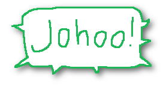

VI DYR ER OGSÅ HER!
Det finnes mange slags dyr rundt oss. Men dyra gjemmer seg som oftest for oss mennesker. Dersom vi er nysgjerrige nok, kan vi likevel oppdage stadig mer av dyrelivet rundt oss.

En måte er å sette ut et viltkamera. Det er et kamera som er laget for å stå ute i naturen og ta bilde eller filme når noe beveger seg foran det. Det tar bilder både i lys og mørke. Jeg legger ut de beste blinkskuddene jeg får her på johoo.no.

Her er et nærbilde av snuta til en grevling, som kom og snuste på viltkameraet.

Jeg fikk mitt viltkamera til jul. Jeg visste om et grevlinghi i nærheten av der jeg bor, og bestemte meg for at det skulle være det første stedet jeg prøvde meg. Allerede første natten fikk jeg film av grevlingen - og en rev i tillegg!

Det er spennende å lete etter spor av dyr, og sette opp kameraet der. Noen ganger henter jeg det etter en dag, og noen ganger lar jeg det stå flere dager før jeg henter det eller sjekker om det har blitt noen "fangst"

Denne nettsiden er laget av Steven Stordal, som er glad i dyr - og kaffe :)